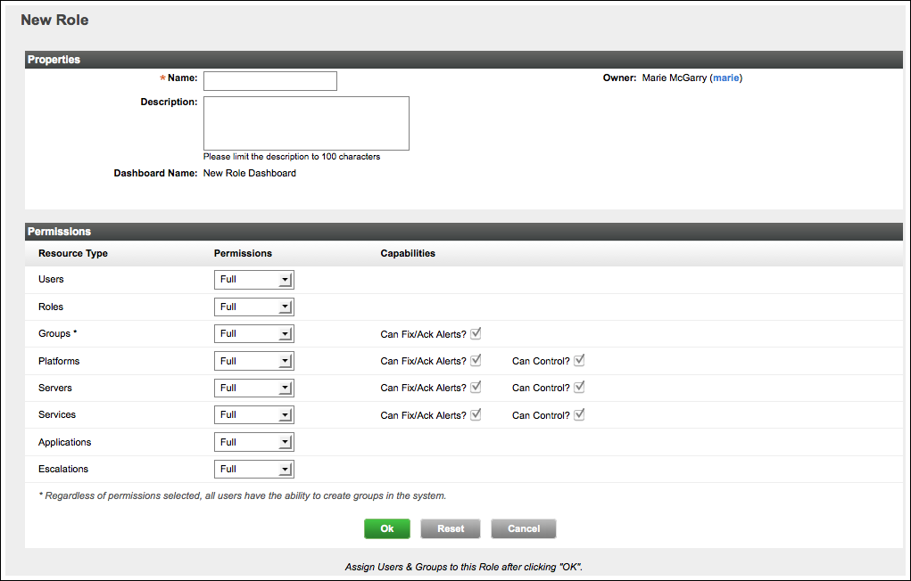

Available only in vFabric Hyperic
Create a Role
| Learn About Roles For an introduction to roles in vFabric Hyperic, see User Accounts and Roles in Hyperic. |
| Role Names and LDAP Authorization If you use LDAP or Active Directory for user authorization, vFabric Hyperic can automatically assign users to Hyperic roles whose name matches a group to which the user is assigned — if the Hyperic role names and LDAP group names adhere to a required naming convention. To take advantage of this functionality:
|
- Click New Role on the Administration page.
 - In the "Properties" section of the New Role page, enter:
- Name
- Description, if desired.
- In the Permissions section, select select a permission level - Full, Read-Write, Read-Only, or None for each type:
- Users
- Grant Full to enable role users to create and delete HQ user accounts.
- Grant Read-Write to enable role users to edit HQ users accounts.
- Roles
- If you select Full, which enables role users to create roles, HQ will ensure that the role's permission level to Users and Groups is at least Read-Only, because to create a role, you need to view users and groups.
- Groups
- Grant Full to enable role users to delete groups created by others.
- Grant Read-Write to enable role users to modify groups created by others.
- Note that regardless of the permission level you select, any user can create groups, and as the owner of such groups, delete them.
- Platforms
- If you select Full, which enables role users to delete platforms and their child resources, HQ will require that the role's permission level to Servers and Services is also Full.
- If you select Full or Read-Write, HQ will automatically checkmark the Can Fix/Ack Alerts? and Can Control? capabilities.
- If you select Read-Only, you have the option to grant alert management or resource control capabilities by clicking Can Fix/Ack Alerts? or Can Control? respectively.
- If you select None, you cannot grant alert management or resource control permissions.
- Servers
- If you select Full, which enables role users to delete servers and child services, HQ will require that the role's permission level to Platforms is at least Read-Write, and its permission level to Services is Full.
- If you select Full or Read-Write, HQ will automatically checkmark the Can Fix/Ack Alerts? and Can Control? capabilities.
- If you select Read-Only, you have the option to grant alert management or resource control capabilities by clicking Can Fix/Ack Alerts? or Can Control? respectively.
- If you select None, you cannot grant alert management or resource control permissions.
- Services
- If you select Full, HQ will require that the role's permission level to Servers is at least Read-Write.
- Grant at least Read-Only if you are going to grant the role Full permission to Applications.
- If you select Full or Read-Write, HQ will automatically checkmark the Can Fix/Ack Alerts? and Can Control? capabilities.
- If you select Read-Only, you have the option to grant alert management or resource control capabilities by clicking Can Fix/Ack Alerts? or Can Control? respectively.
- If you select None, you cannot grant alert management or resource control permissions.
- Applications
- Grant Full if you want role users to be able to create and delete applications.
- Grant Read-Write if you want role users to be able to modify change applications created by others.
- Escalations
- Grant Full if you want role users to be able to create and delete escalations groups
- Grant Read-Write if you want role users to be able to modify escalations.
- The role is saved, and the refreshed role page will have three new sections: "Assigned Users", "Assigned Groups", and "Alert Calendar".
- Users
Proceed to Assign Users to a Role.
Assign Users to a Role
In vFabric Hyperic, each user you assign to a role can exercise the permissions defined for the role, on resources in the groups assigned to the role.
- If you are not currently viewing the role to which you wish to assign users, navigate to the role.

- Click Add to List in the "Assigned Users" section of the page.
- The Assign Users to Role page appears.

- The Assign Users to Role page appears.
- On the "Users" panel on the left side page, checkmark each HQ user you wish to add to the role, and click the blue arrow to move the users to the "Assign To Role" panel.
- Click OK when you are done adding users to the role.
If you are creating a role purely for the purpose of role-based alert notification, skip to Define Alert Calendar for Follow-the-Sun Role-Based Notifications. Otherwise proceed to Assign Groups to a Role.
Assign Groups to a Role
In vFabric Hyperic, the groups of resources you assign to a role constitute the population of resources to which users with that role may exercise the permissions associated with the role. (For example, if the role's permission level to Platforms is None, role users will not have access to platforms in groups assigned to the role.)
| Permissions are granted only to groups of individual resources Assigning a group of groups or a group of applications to a role does not grant permissions to individual resources in nested groups or applications. Groups you assign to a role for the purpose of granting permissions must contain individual resources, as opposed to other groups or applications. |
For more information, see User Accounts and Roles in Hyperic.
- If you are not currently viewing the role to which you wish to assign groups, navigate to the role.
- Click Add to List in the "Assigned Groups" section.
- The Assign Groups to Role page appears.

- The Assign Groups to Role page appears.
- On the "Groups" panel on the left side of the page, checkmark each resource group you wish to add to the role, and click the blue arrow to move the groups to the "Assign To Role" panel.
- Click OK when you are done adding groups to the role.
Proceed to Define Alert Calendar for Follow-the-Sun Role-Based Notifications, as desired.
Define Alert Calendar for Follow-the-Sun Role-Based Notifications
An alert calendar defines the availability calendar during which role users are available for alert notfications. You should define an alert calendar if:
- You are creating a role that will be a recipient of alert notifications, and
- The users assigned to the role users are available only during specific intervals only.
By default, a role's alert calendar settings specify that role users are available for notifications 24 hours a day, 7 days a week, with no exceptions. To define a narrower availability calendar:
- For each day in the week,
- Use the first set of From and To pull-downs to specify a start time and an end time that role users are availability for notifications.
- If there is a period of time within the availability period specified in the previous step, during which role users should not receive notifications, click Except, and use the From and To pull-downs on the right to specify that period of time.
- Click Save after defining the alert calendar.
| You must define additional role or roles with complementary alert calendars to ensure that there is a role whose users are available during periods of time that the current role's alert calendar does not include. |
Customize Role-Specific Dashboard
When you create a role, vFabric Hyperic creates a Dashboard with the same name as the role, which Hyperic users with the role can select from the Select a Dashboard pull-down in the upper left corner of the Hyperic Dashboard.
As desired, you can add, remove, or reconfigure the portlets on the role dashboard to meet the needs of role users. For more information see Role-Based Dashboards in vFabric Hyperic.
Use Roles for Follow the Sun Alerting
HQ allows you to notify users of incidents based on support schedules, greatly simplifying the management of 24x7 or rotating support teams. This is accomplished through the use of role-based alert calendars. The alert calendar can be most usefully applied in an , wherein multiple sets of people can be selected for notification, but only the one whose alert calendar is currently open will be notified.
To implement follow the sun alerting:
- Create multiple roles.
- For each role, assign complementary alert calendars (that is, alert calendars that span different periods of time, but all together cover the calendar).
- On the "Edit Role" screen, follow the instructions on ui-Admin.Role for creating a calendar for a role.
- Define an escalation scheme with at least one "SMS" or "email" escalation action. For instructions, see Configure and Manage Escalations.
- In the escalation action, instruct HQ to notify "All users assigned to a specific role" and then select all of the just-defined roles.
- Create an alert and assign that escalation scheme to it.
When the alert is fired, HQ will start performing the escalation actions but will only notify the roles whose alert calendars are currently open.
List Roles
- Click List Roles on the Administration page.
- The List Roles page appears.
A screenshot of the List Roles page is shown below.

The List Roles page lists the following information for each role.- Name — Click a role name to view and edit the role.
- Number of Members
- Description
- The List Roles page appears.
View a Role
- List roles, following the instructions in List Roles.
- Click the name of role you wish to view.
A screenshot of the RoleName page is shown below.
Properties Section
The Properties section contains this information:
- Name
- Owner — The user that created the role.
- Description
- Administer HQ Server Configuration
- Dashboard Name
Permissions Section
The Permissions section displays the permission matrix for the role.
- None - No access at all to instances of the type.
- Read-Only - Allows role users to view instances of the type, but not create, edit, or delete them. For Platforms, Servers, Services, Groups, also enables:
- Read-Only access to alert definitions for the inventory type.
A role with Read-Only permission level does not have permissions to enable/disable/fix/ack alerts or control resources - these capabilities must be explicitly granted.
- Read-Write - Allows role users to view and edit instances of the type, but not create or delete them. For Platforms, Servers, Services, Groups, also gives:
- Full access to alert definitions for the inventory type,
- Permission to manage alerts (enable/disable, fix, acknowledge) for the inventory type.
- Permission to perform supported control operations on resources of the inventory type.
- Full - Allows role users to create, edit, delete, and view instance of the type. For Platforms, Servers, Services, Groups, also gives:
- Full access to alert definitions for the inventory type.
- Permission to manage alerts (enable/disable, fix, acknowledge) for the inventory type.
- Permission to perform supported control operations on resources of the inventory type.
Assigned Users
The Assigned User section lists the following information for each user assigned to the role:
- First Name
- Last Name
- UserName — Click to view the user.
Click Add to List to add users to the role.
Assigned Groups
The Assigned Groups section lists the following information for each group assigned to the role:
- Group — The name of the group. Click to view the group.
- Description
Click Add to List to add users to the role.
Alert Calendar
The Alert Calendar section defines the availability calendar during which role users are available for alert notfications.
Custom alerts calendars enable "follow the sun" alert notifications. To implement a follow the sun notification strategy, you create multiple roles with complementary alert calendars. You assign a user to the role whose alert calendar matches the user's availability.
By default, a role's alert calendar settings specify that role users are available for notifications 24 hours a day, 7 days a week, with no exceptions.
To define an availability calendar for a role:
- For each day in the week,
- Use the first set of From and To pull-downs to specify a start time and an end time that role users are availability for notifications.
- If there is a period of time within the availability period specified in the previous step, during which role users should not receive notifications, click Except, and use the From and To pull-downs on the right to specify that period of time.
- Click Save after defining the alert calendar.
| You must define additional role or roles with complementary alert calendars to ensure that there is a role whose users are available during periods of time that the current role's alert calendar does not include. |
Edit a Role
- List roles, following the instructions in List Roles.
- Click the name of role you wish to edit.
- To make changes to:
- Role permissions — Click Edit in the Permissions section of the page. See Create a Role for instructions.
- Which users are assigned to the role — Click Edit in the Assigned Users section of the page. See Assign Users to a Role for instructions.
- The alert calendar for role — Follow the instructions in Define Alert Calendar for Follow-the-Sun Role-Based Notifications.